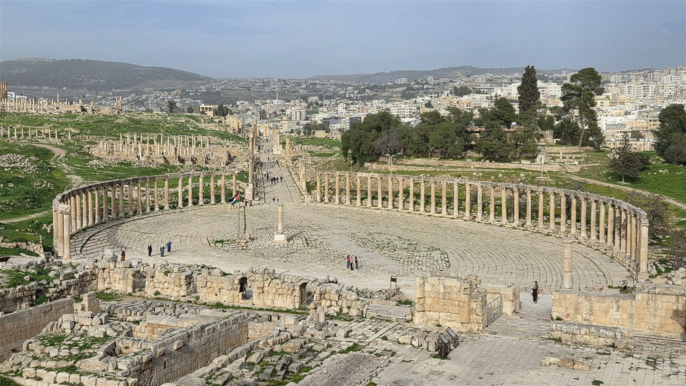
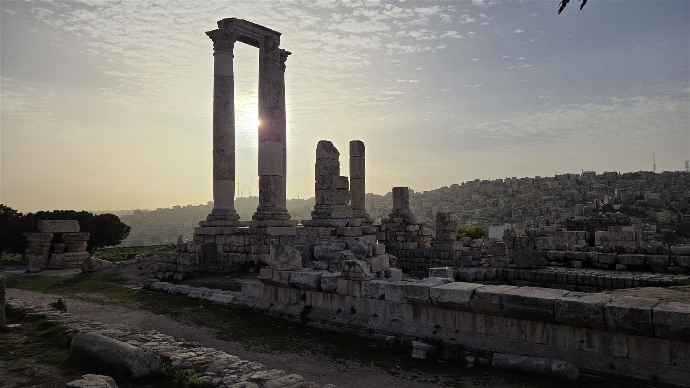
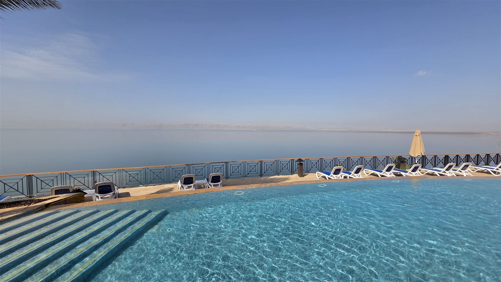
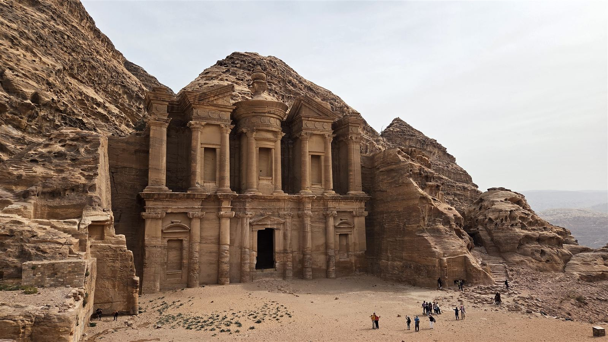
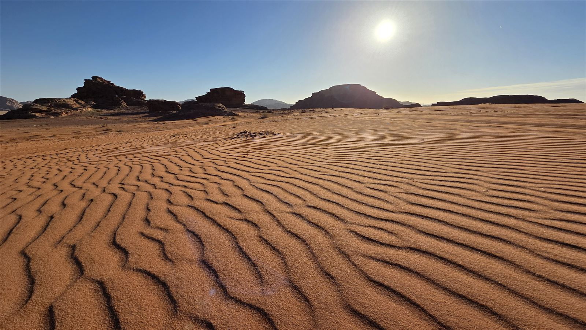
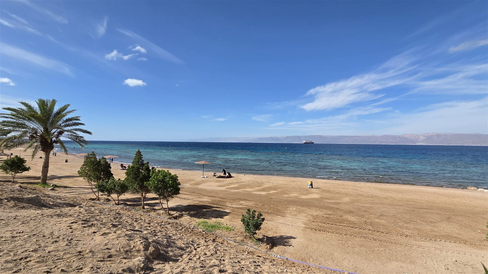

Z cest
Jordánsko za týden autem: Džaraš, Mrtvé moře, Petra, Wádí Ram a Akaba
Destinace a úvod
Do Jordánska jsme letěli 8. až 15. února 2026, byli jsme čtyři. Celý okruh jsme jezdili půjčeným autem: z Ammánu na sever do Džaraše, pak k Mrtvému moři, na jih do Petry a Wádí Ram, k moři do Akaby a přes Madabu zpátky na letiště. V únoru bylo skoro všude minimum turistů.
Proč zrovna Jordánsko? Je to levná destinace s krásnými památkami a hlavně s Petrou, kterou člověk musí vidět. Mrtvé moře bylo bonus.
Letenka
Letěli jsme Ryanairem z Krakova do Ammánu. Tam v neděli 8. 2. v 6:50 ráno, zpátky v neděli 15. 2. ve 14:30. Zpáteční letenka vyšla zhruba na 2 500 Kč na osobu (2026, podle paměti).
Doprava na letiště
Na letiště v Krakově jsme jeli autem a parkovali na Euro Parking Balice.
Salonky
Do obou salonků jsem šel přes LoungeKey.
Krakov
V Krakově je jen jeden salonek, Krakow Airport Business Lounge. Celkem slušný salonek, i když byl docela plný, ale dá se. Byly tam saláty, teplá polévka, víno a pivo, včetně místního piva.
Ammán
Na letišti v Ammánu jsou nahoře dva salonky. Ten po levé straně, když přijdete, je malý a moc se mi nelíbil. Ten po pravé straně, Plaza Premium Lounge, je daleko větší a byl fakt dobrý: kuchaři v jednom koutě dělali čerstvé palačinky, později je vyměnili za čerstvě dělané těstoviny, bylo tam několik stanovišť s točenou zmrzlinou a alkohol se nalévá jen na baru s obsluhou. Dělali i míchané nápoje a dali nám, co jsme si řekli a kolik jsme si řekli.
Data a e-SIM
Místní SIM kartu jsme kupovali hned po příletu přímo na letišti, za 10 JOD (2026). Myslím, že jsme měli jednu SIM pro všechny.
Ubytování
Ammán: Ibis
První noc jsme spali v Ibisu v Ammánu. Dva pokoje pro čtyři lidi stály 1 650 Kč, tedy asi 410 Kč na osobu (2026). Kousek od hotelu je restaurace i liquor store, kde se dá koupit alkohol. Ibis bych klidně bral na přespání znovu.
Mrtvé moře: Mövenpick Resort
U Mrtvého moře jsme si na jednu noc dopřáli Mövenpick Resort. Pokoj pro dva vyšel kolem 3 500 Kč za noc i s jídlem (2026, podle paměti), tedy asi 1 750 Kč na osobu. Měli jsme asi polopenzi, večeře i snídaně byly formou bufetu, nápoje myslím v ceně nebyly.
Díky zlatému statusu v ALL Accor jsme dostali upgrade pokoje a na pokoji čekaly dárky: sada zákusků, ovoce, dóza soli z Mrtvého moře a dvě mýdla. Hodně nás překvapil welcome drink na terase. Byl pro oba pokoje, tedy pro všechny čtyři, a mohli jsme si vybrat cokoli z nápojového lístku. Zvolil jsem whisky Macallan, která tam normálně stojí kolem 600 Kč za panáka. Každý den je navíc happy hour, kdy všechny nápoje včetně vína a piva stojí kolem 100 Kč.
Resort je strašně velký, ale jezdí po něm větší elektrické vozíky, které vás svezou i na pláž. Je tam několik bazénů, pokoj byl velmi velký, se sprchou i vanou zvlášť, a hostů bylo málo. Pláž je celkem malá, v únoru na ní skoro nikdo nebyl, jsou tam lehátka a dole u pláže i bahno na namazání. Líbilo se nám tam moc. Check-out jsme měli pozdní, myslím ve 13:00.
Petra: Beit Alshabaan Inn
U Petry jsme měli dvě noci v Beit Alshabaan Inn ve Wádí Músá, rezervovaný přes Booking. Dva pokoje pro všechny čtyři stály za obě noci 2 000 Kč, tedy 500 Kč na osobu (2026). Ubytování jednoduché, ale v pohodě, jen kopec k hotelu je mega prudký. K parkovišti před Petrou se sjíždí autem.
Wádí Ram: Wadi Rum Safari Camp
V poušti jsme měli jednu noc v kempu Wadi Rum Safari Camp. Kemp je základní, ale každý stan měl vlastní sprchu a záchod a stanů bylo jen asi čtyři nebo pět. Snídaně a večeře byly v ceně a bylo to strašně levné: myslím, že kolem 330 Kč za noc pro dva (2026, podle paměti).
Akaba: Al Raha Luxury Apartment
V Akabě jsme spali v Al Raha Luxury Apartment, novém apartmánovém komplexu úplně na jižním konci města, kde už končí zástavba. Pro všechny čtyři to stálo 2 000 Kč za noc, tedy 500 Kč na osobu (2026). Check-out byl myslím až ve 13:00, takže jsme ráno stihli ještě pláž.
Madaba: CMK Housing
Poslední noc jsme spali v Madabě, kousek od letiště, v CMK Housing, apartmánu se dvěma ložnicemi. Pro všechny čtyři to stálo 1 250 Kč za noc, asi 310 Kč na osobu (2026).
Místní doprava
V Ammánu jsme jezdili Boltem. Bylo to levné, podle paměti kolem 100 Kč za jízdu pro všechny čtyři (2026). Jinak jsme všude jezdili autem.
Peníze
Hodně jsme platili kartou a na hotovost jsme vyměnili nějaká eura.
Půjčení auta
Auto jsme měli od půjčovny Auto Nation s pobočkou u letiště v Ammánu. Za týden jsme za celé auto zaplatili 282 USD (2026), tedy asi 70 USD na osobu. Dostali jsme Dacii Logan, myslím, a bylo to v pohodě.
Na letišti nás čekal člověk z půjčovny a odvezl nás do kanceláře, asi 10 minut cesty. Při vrácení to bylo stejné: přijeli jsme do půjčovny, předali auto a hned nás odvezli zpátky na letiště. Myslím, že jsem měl plnou pojistku, takže auto ani nekontrolovali.
Silnice byly dobré, i prudké stoupání do hor cestou k Petře je asfaltové a autem v pohodě.
Program po dnech
Den 1 (ne 8. 2.): přílet a Džaraš
Po ranním příletu a převzetí auta jsme jeli z letiště rovnou do Džaraše, severně od Ammánu. Moc pěkné, velké a bez lidí, určitě doporučuji, stojí to za tu cestu. Vstup jsme měli v Jordan Passu. Večer jsme se vrátili do Ammánu a spali v Ibisu.

Trasa dne v Mapách Google: https://www.google.com/maps/dir/Queen+Alia+International+Airport/Jerash/Amman
Den 2 (po 9. 2.): Ammán a přejezd k Mrtvému moři
Dopoledne jsme Boltem zajeli do centra Ammánu a prošli Citadelu, Římské divadlo, Velkou Husajního mešitu (Grand Husseini Mosque) a tržiště v centru. Centrum se mi líbilo, ale bohatě stačilo dopoledne. Památky jsou krásné a turistů minimum. Kousek od Ibisu jsme jedli v Reem Al Bawadi a v liquor storu vedle jsme koupili láhev vína.
Odpoledne jsme přejeli k Mrtvému moři do Mövenpicku.

Trasa dne v Mapách Google: https://www.google.com/maps/dir/Amman+Citadel/Roman+Theatre+Amman/M%C3%B6venpick+Resort+%26+Spa+Dead+Sea
Den 3 (út 10. 2.): Mrtvé moře a cesta k Petře
Po snídani jsme dopoledne ještě byli u bazénu a u moře, check-out jsme měli ve 13:00. Odpoledne jsme jeli na jih po silnici podél Mrtvého moře. Strašně pěkná cesta a hlavně absolutně žádný provoz. Na konci Mrtvého moře se stoupá do hor a pak se sjíždí k Petře. Příjezd přes hory byl úplně nejhezčí část, hodně prudké, ale autem v pohodě a na slušném asfaltu. K Petře jsme dorazili večer.

Trasa dne v Mapách Google: https://www.google.com/maps/dir/M%C3%B6venpick+Resort+%26+Spa+Dead+Sea/Beit+Alshabaan+Inn%2C+Wadi+Musa
Den 4 (st 11. 2.): Petra
Vyrazili jsme brzo, kolem osmé. Od hotelu jsme sjeli autem na parkoviště před Petrou, které je zdarma. Pozor, i s Jordan Passem musíte nejdřív k pokladně, kde vám pass vymění za vstupenku.
Došli jsme k Pokladnici, prošli celé údolí až dozadu a vystoupali do kopce ke Klášteru. Chodili jsme celý den, Petra je fakt rozlehlá. K Pokladnici jezdí i vláček. Cestou zpátky jsme uhnuli doleva a došli na vyhlídku nad Pokladnicí, ze které je vidět shora, z druhé strany skal. Obě vyhlídky naproti Pokladnici se ale připlácejí.
Večer i další den jsme jedli ve Falafel Time Restaurant, bylo to dobré.

Trasa dne v Mapách Google: https://www.google.com/maps/dir/Petra+Visitor+Center/Al+Khazneh/Ad+Deir%2C+Petra
Den 5 (čt 12. 2.): Malá Petra a Wádí Ram
Do velké Petry jsme se už nevraceli, prošli jsme ji den předtím. Ráno jsme zajeli do Malé Petry. Bylo tam daleko méně lidí, fakt strašně málo turistů, a taky to bylo pěkné.
Pak jsme jeli do Wádí Ram. Připlatili jsme si půldenní, asi čtyřhodinovou projížďku jeepem: navštívili jsme místní obyvatele na čaj, duny a místo spojené s Lawrencem z Arábie. Jeep vyšel myslím asi na 50 USD pro všechny čtyři (2026, podle paměti). Noc jsme strávili v kempu.

Trasa dne v Mapách Google: https://www.google.com/maps/dir/Little+Petra/Wadi+Rum+Village
Den 6 (pá 13. 2.): Akaba
Ráno jsme z Wádí Ram přejeli do Akaby, ubytovali se a hned jeli k moři na South Beach, až za městem. Dobrá pláž, pár lidí, dalo se koupat. Hodně foukalo, ale bylo teplo a moře bylo dobré. Večer jsme jeli do města, prošli historické centrum, najedli se a nakoupili koření.

Trasa dne v Mapách Google: https://www.google.com/maps/dir/Wadi+Rum+Village/South+Beach+Aqaba/Aqaba
Den 7 (so 14. 2.): Akaba a přejezd do Madaby
Dopoledne jsme se ještě vykoupali na pláži, po check-outu ve 13:00 jsme jeli zpátky na sever. Do Madaby jsme dorazili až později odpoledne.
Trasa dne v Mapách Google: https://www.google.com/maps/dir/Aqaba/Madaba
Den 8 (ne 15. 2.): Madaba a odlet
Ráno jsme prošli centrum Madaby, vrátili auto v půjčovně, nechali se odvézt na letiště a ve 14:30 jsme odlétali do Krakova.
Trasa dne v Mapách Google: https://www.google.com/maps/dir/Madaba/Queen+Alia+International+Airport
Kde jsem jedl
Ammán: Reem Al Bawadi, kousek od Ibisu. Dobré jídlo, v pohodě.
Mrtvé moře: bufet v Mövenpicku v rámci polopenze.
Petra: Falafel Time Restaurant, jedli jsme tam oba dny. Dobré to bylo.
Wádí Ram: snídaně a večeře v kempu, v ceně ubytování.
Náklady
Útratu jsem si podrobně nevedl. Tohle jsou částky, které znám, přepočtené na osobu (vše 2026):
Zpáteční letenka Krakov–Ammán: asi 2 500 Kč.
Půjčení auta na týden: 282 USD za auto, asi 70 USD na osobu.
Ibis Ammán, 1 noc: asi 410 Kč.
Mövenpick Mrtvé moře, 1 noc s polopenzí: asi 1 750 Kč.
Beit Alshabaan Inn, 2 noci: 500 Kč.
Kemp ve Wádí Ram, 1 noc s polopenzí: asi 165 Kč.
Jeep ve Wádí Ram: asi 50 USD za všechny, tedy kolem 12,50 USD na osobu (podle paměti).
Al Raha Luxury Apartment, Akaba, 1 noc: 500 Kč.
CMK Housing, Madaba, 1 noc: asi 310 Kč.
Jordan Pass se dvěma dny v Petře: 2 250 Kč (2026). Pokrývá i vízum, pokud v zemi strávíte aspoň dvě noci.
Místní SIM na letišti: 10 JOD za jednu SIM pro všechny (2026).
Jídlo, palivo, parkování v Krakově a drobné výdaje jsem nesledoval.
Postřehy
V únoru bylo skoro všude minimum turistů, v Džaraši, v Ammánu i v Malé Petře.
Alkohol se v Ammánu dá koupit v liquor storech.
Silnice podél Mrtvého moře k Petře je jedna z nejhezčích cest, a skoro bez provozu.
Ammánu mi bohatě stačilo dopoledne.
Obě vyhlídky naproti Pokladnici v Petře se připlácejí.
Co bych udělal jinak
Upřímně až tak moc nic. Kdyby byla možnost, prodloužil bych pobyt u Mrtvého moře v Mövenpicku.
A Jordan Pass: zvažovali jsme variantu s jedním dnem v Petře, ale rozdíl byl tak malý, že jsme radši vzali dvoudenní pro případ, že bychom do Petry dorazili dřív. Díky pozdnímu check-outu u Mrtvého moře jsme přijeli až večer a druhý den jsme vůbec nepotřebovali. Kdo ví, že do Petry dorazí večer a celou ji projde za jeden den, vystačí si s jednodenní variantou.